Look n°23
Salon de Noël vert olive et crème
Un salon de Noël crème et vert olive, tout en douceur : canapé courbe en bouclette, fauteuil rond, sapin aux nœuds de velours vert et cadeaux lumineux. Voici les articles pour recréer ce look chez toi.
Prix au 21/11/2026
-
Canapé d'angle incurvé en bouclette blanche, 275 cm
Grand canapé en arc à méridienne arrondie, sans pieds visibles, 4 coussins inclus. 275 × 115 cm, 63 cm de haut, assise à 42 cm.
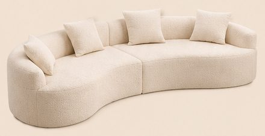
435,99 €Voir sur Amazon -
Fauteuil rond « nid » en bouclette crème, Ø 127 cm
Gros fauteuil rond sans pieds, dossier bas en demi-cercle, 3 coussins inclus. Ø 127 cm, 60 cm de haut.
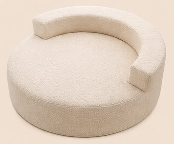
174,89 €Voir sur Amazon -
Table basse haricot en bois foncé, pieds cannelés
Plateau en forme de haricot façon noyer, 3 gros pieds cylindriques cannelés. 100 × 60 cm, 38 cm de haut.
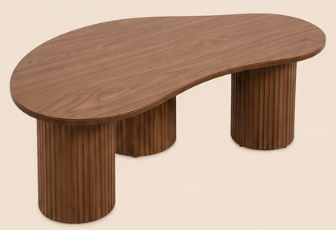
129,00 €Voir sur Amazon -
Tapis crème à vagues en relief, 160 × 230 cm
Poils courts, vagues sculptées ton sur ton. 160 × 230 cm.
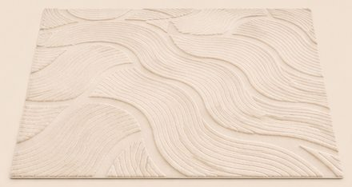
66,99 €Voir sur Amazon -
Suspension 3 abat-jour effet lin, rosace dorée
3 cylindres de lin beige emboîtés en spirale, rosace et tige dorées. Ø 50 cm, 37,5 cm de haut.
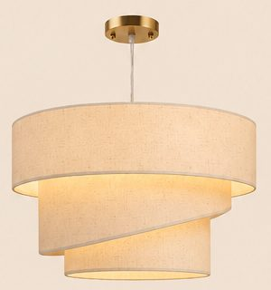
79,90 €Voir sur Amazon -
Sapin de Noël lumineux 180 cm, 300 LED
Sapin vert dense de 996 pointes, LED blanc chaud intégrées, pied en croix en bois. 180 cm de haut, Ø 127 cm.
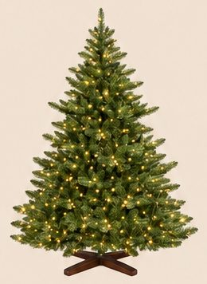
134,99 €Voir sur Amazon -
Rideau lumineux 3 × 3 m, 300 LED blanc chaud
Fils de micro-LED qui tombent en rideau devant la fenêtre, télécommande et minuterie. 3 × 3 m.
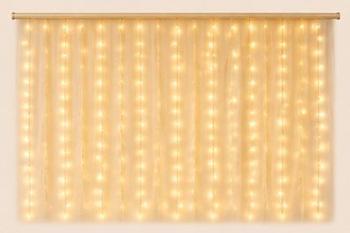
11,39 €Voir sur Amazon -
Guirlande de sapin en cascade, 400 LED
16 brins de 2 m qui descendent du sommet du sapin, blanc chaud, 8 modes.
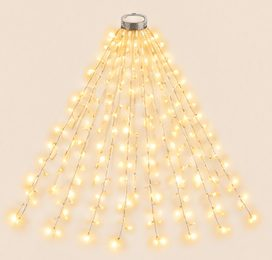
18,94 €Voir sur Amazon -
Boules de Noël champagne et dorées (40 pièces)
Boules champagne, dorées et blanches, lisses ou ciselées, et flocons argentés ; la plupart font 6 cm.
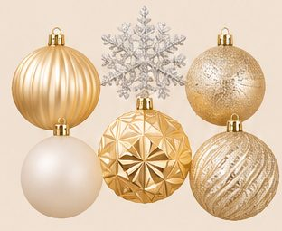
22,99 €Voir sur Amazon -
Nœuds de sapin en velours vert (16 pièces)
1 grand nœud de 25 cm et 15 nœuds de 10 cm en velours vert sapin.
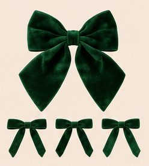
11,99 €Voir sur Amazon -
Étoile de sapin dorée lumineuse, 25 cm
Étoile en fil doré pailleté avec petites LED, ressort pour la fixer. 20 × 25 cm.
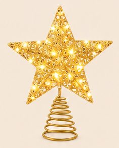
11,99 €Voir sur Amazon -
Jupe de sapin en fausse fourrure blanche, Ø 120 cm
Fausse fourrure blanc neige très moelleuse, cache le pied du sapin. Ø 120 cm.
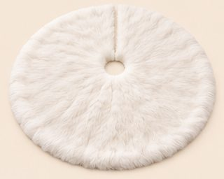
30,39 €Voir sur Amazon -
Boîtes cadeaux lumineuses à nœud doré (lot de 3)
Cubes en voile blanc éclairés de l'intérieur, ruban et nœud dorés. 19, 15,5 et 13 cm.
43,69 €Voir sur Amazon -
Lanterne dorée avec bougie, 28,5 cm
Métal doré brillant, vitres claires, anse ronde, bougie pilier. 12 × 12 cm, 28,5 cm de haut. Il y en a 2 sur l'image : prix à l'unité.
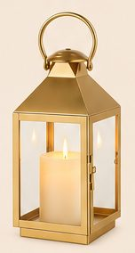
28,03 €Voir sur Amazon -
Couverture gaufrée vert olive, 220 × 240 cm
100 % coton en gros nid d'abeille. 220 × 240 cm.
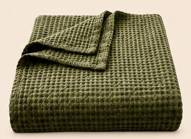
58,46 €Voir sur Amazon -
Plaid fausse fourrure « bulles » crème, 150 × 130 cm
Fausse fourrure en bandes bouffantes, très douce. 150 × 130 cm.
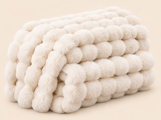
24,99 €Voir sur Amazon -
Housses de coussin chenille vert olive, 40 × 40 cm (lot de 2)
Chenille épaisse texturée. 40 × 40 cm, housses seules.
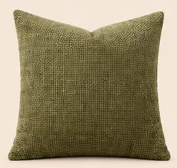
15,29 €Voir sur Amazon -
Housses de coussin tressées vert olive, 45 × 45 cm (lot de 2)
Peluche épaisse à motif de tresse. 45 × 45 cm, housses seules.
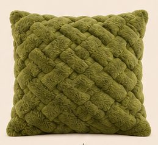
22,95 €Voir sur Amazon -
Housses de coussin fourrure à carreaux crème, 50 × 50 cm (lot de 2)
Fausse fourrure en petits carrés bombés. 50 × 50 cm, housses seules.
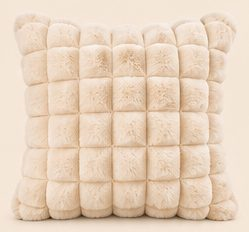
24,40 €Voir sur Amazon -
Plateau rond en noyer, Ø 45 cm
Plateau rond à rebord, placage noyer. Ø 45 cm.
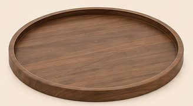
39,98 €Voir sur Amazon -
Mini sapin 60 cm avec LED et baies rouges
Branches givrées, baies rouges, pommes de pin, 30 LED à piles, pied en toile de jute. 60 cm de haut.
27,97 €Voir sur Amazon -
Vase blanc cannelé en céramique, 16 cm
Céramique blanc mat à côtes verticales. 16 cm de haut, 8 cm de large.
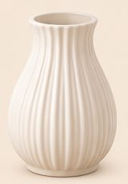
24,63 €Voir sur Amazon -
Bouquet de fleurs artificielles vert sauge
Dahlias et pivoines vert sauge, marguerites blanches et herbes claires. 40 cm de haut.
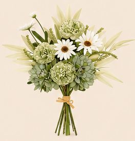
17,99 €Voir sur Amazon -
Bougeoirs cœur en bois blanchi avec plateau (lot de 3)
3 bougeoirs-bûches blanchis avec petits cœurs et nœuds de dentelle, sur un plateau en cœur. 21 × 21 × 9 cm. Article proche : sur l'image, ils ressemblent à des photophores habillés de dentelle, posés sur une soucoupe ronde.
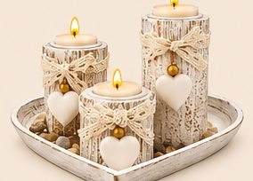
-
Affiches botaniques vert sauge et beige, 30 × 40 cm (lot de 3)
3 feuillages vert sauge sur des arches beige. 30 × 40 cm, vendues sans cadre (cadres : n° 26).
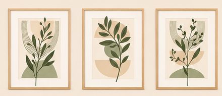
24,99 €Voir sur Amazon -
Cadres en bois clair 30 × 40 cm (lot de 3)
Cadres fins en bois clair avec passe-partout, pour les 3 affiches. 30 × 40 cm.
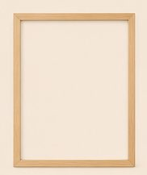
22,04 €Voir sur Amazon
Enregistrer ce look sur Pinterest
Comment naît un lookComment chaque article est choisi, mesuré et vérifiéImage d'inspiration générée par IA. Prix indicatifs, revérifiés toutes les deux semaines.